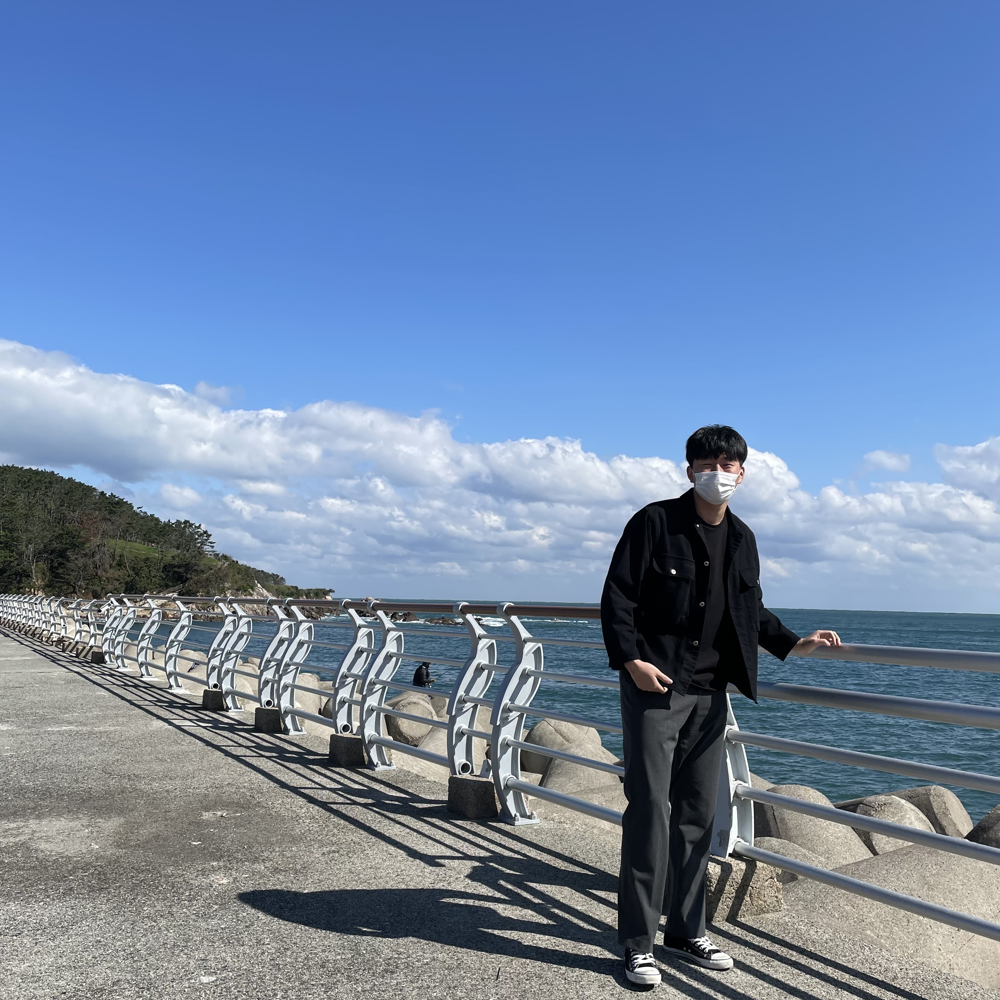
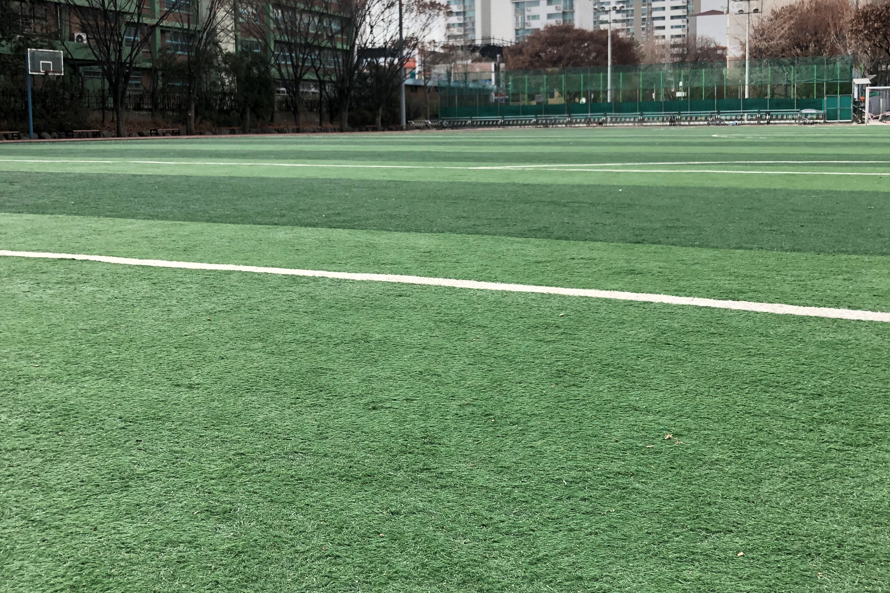
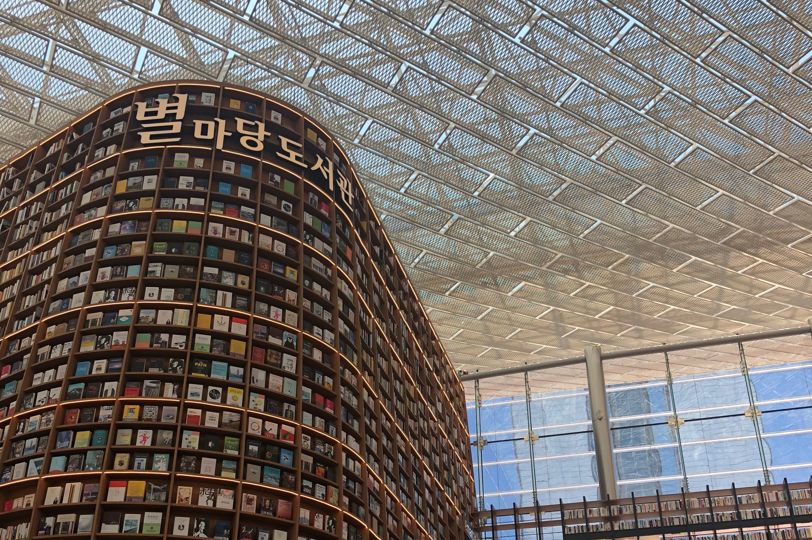
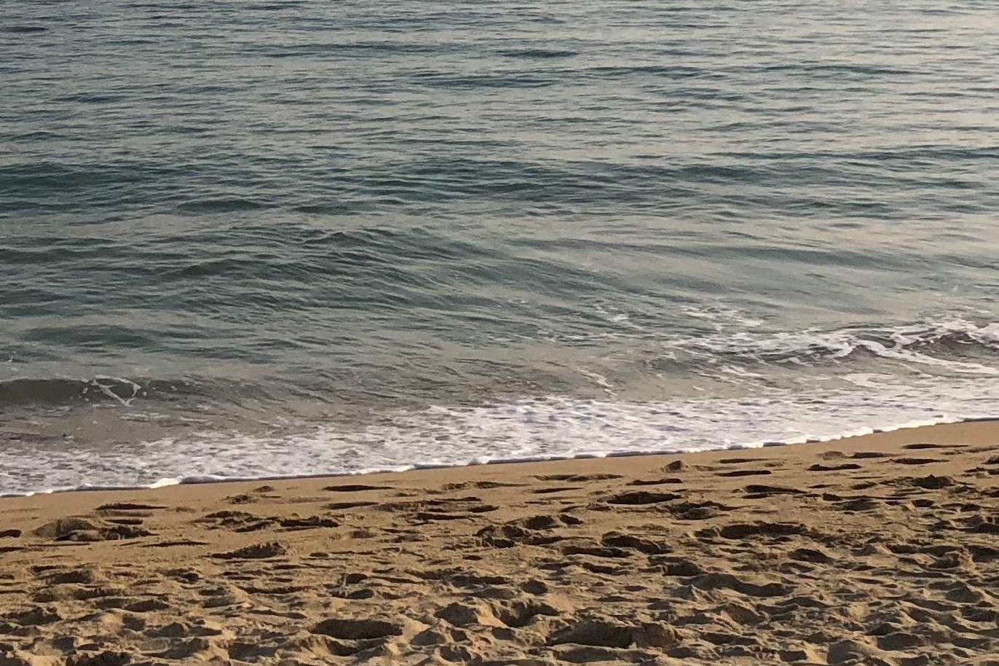
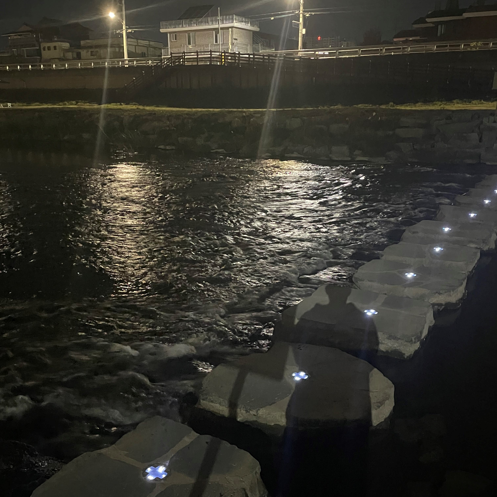
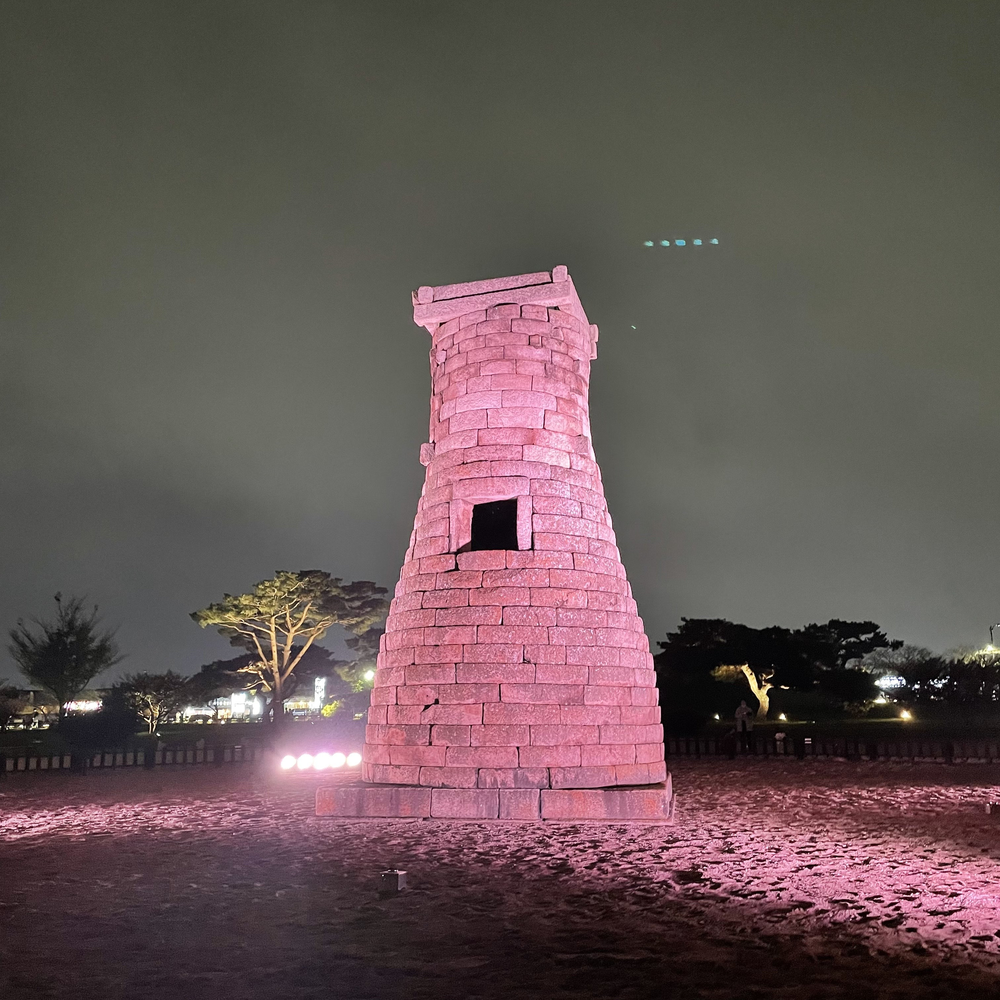
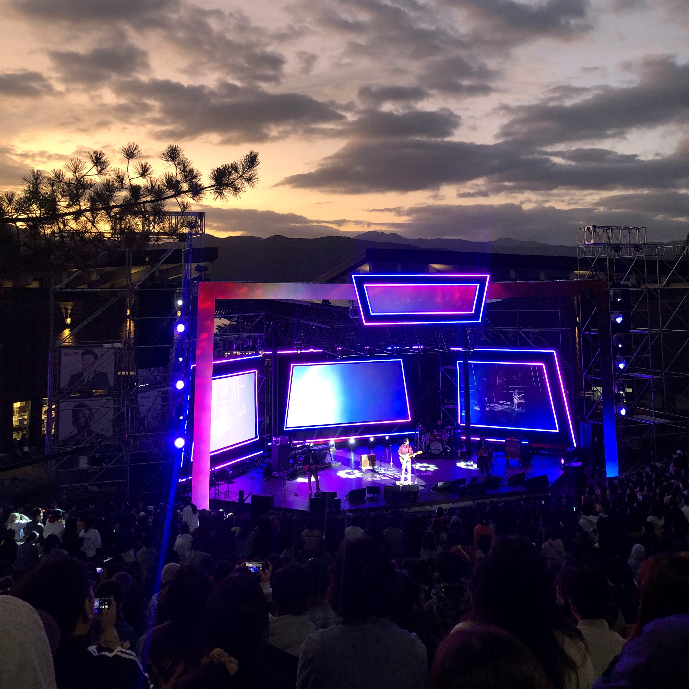

이름 : 이수현
생년월일 : 1999.10.29
학교/전공 : 강원대학교 컴퓨터공학과
취미 : 운동, 독서, 음악 감상
전화번호 : 010-2273-5927
이메일 : sh9402315@naver.com

최고보다 최선을 다하는 사람

나무를 보며 숲을 그리는 사람

마음에 여유가 있는 사람
의지가 되는 사람

날씨가 선선해지면 늦은 저녁에 산책을 자주 나가곤 합니다.
좋아하는 음악을 들으며 아무 생각 없이 걷다 보면 스트레스가 풀리는 기분입니다.

방학이 되면 여유를 내서 여행을 한 번 씩 다닙니다.
낯선 장소를 여기저기 둘러보기도 하고, 그 지역의 유명한 음식을 먹어본다든지
평소 일상생활에서 보고 느끼지 못했던 것들을 여행을 다니며 느끼고 있습니다.

좋아하는 아티스트의 공연을 보는 것을 좋아합니다.
이어폰으로만 듣던 노래를 실제 내 눈앞에서 부르는 아티스트를 보면 감정이 벅차오르곤 합니다.